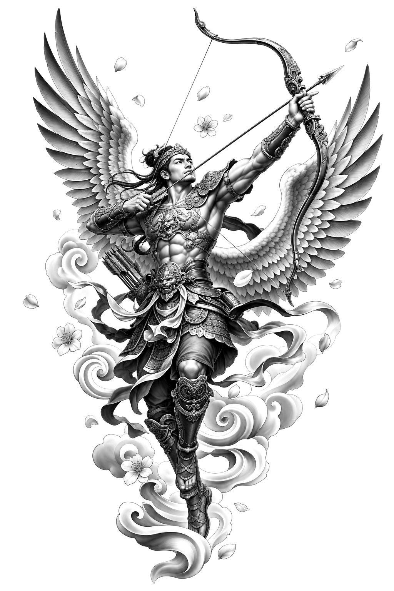

Décris ton idée — notre IA sculpte une pièce unique en noir & gris, en moins de 60 secondes. À toi de la garder, prête à tatouer.

Adopté par des tatoueurs et passionnés dans le monde entier · Paiement sécurisé · Satisfait ou remboursé
Marbre & géométrie sacrée
Architecture, clair-obscur
Irezumi, mouvement
Précision, dotwork
Noir & gris photoréaliste
« Je montre le design généré à mon client avant l'aiguille. Le taux de validation a explosé — et la qualité est bluffante. »
Marco V. — Tatoueur, Studio Eternal Ink